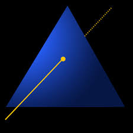

Summary #
| Role | Technical Game Designer / Systems Designer |
|---|---|
| Team | Solo |
| Engine | Godot |
| Target Platform | Anbernic RG-40XXH (budget Linux handheld) |
| Repo | GitHub |
| Duration | 3 Months |
About #
Emily’s Interior Design Co. is an Animal Crossing–inspired interior design game built for my wife, an interior design student. Developed solo over three months alongside full-time studies, this project serves as the technical systems and optimization showcase in my portfolio. The focus was two-fold: creating a modular, designer-facing pipeline for rapid level iteration, and aggressive optimization to push an unplayable 2–4 FPS build to ~55 FPS on a budget $70 Linux handheld (Allwinner H700 / Mali-G31).
Project Focus: Low-level Optimization, Asset Pipelines, and Custom Editor Tooling (For more design based breakdowns see my case studies on Snowball Showdown and Lantern of Souls.)
Target Hardware #

| Console | Anbernic RG-40XXH |
|---|---|
| CPU | Allwinner H700, quad-core ARM Cortex-A53 @ 1.5GHz |
| GPU | Mali-G31 MP2 |
| RAM | 1GB |
| Display | 4" 640x480 (4:3) |
| Storage | 64GB microSD |
| System | 64-bit Linux |
I chose the RG-40XXH because it let me give Emily a physical, portable game she could play without a powerful PC. At around $70, it was affordable and already built for handheld play.
The tradeoff is that it’s designed for retro games, not modern 3D. Performance became a design constraint from day one, shaping everything from the renderer to how rooms are built. My goal was a stable 30 FPS at native resolution.
For details on how I acheived this goal look at Optimization.*
Room Decoration Logic #
Getting the Objects into the Game #
Early on it was clear I wouldn’t have time to model every decorative object, so I used an asset pack and hand-picked the objects I wanted. The pipeline:
OBJ asset pack → Python export script (OBJ → GLB) → Godot import script → game-ready object
The import script sets up everything an object needs: collision, multiple skins, and game-specific attributes. For example, wall objects need a wall-raycast node to work with the placement system.
I imported the first few objects by hand to learn what each model needed. Then I estimated the time to process hundreds of objects that way: around six months. Instead, I spent about two weeks building the export and import scripts, with AI assistance where needed. After that, any selected object could be brought into the game with minimal manual setup.
Example: encoding game rules into the import script
This function moves an object’s collision onto the layers the game’s placement system expects.
func change_collision_layers(scene_root_path: String):
var inst = load(scene_root_path).instantiate()
var collision_node: StaticBody3D = find_collision_node(inst)
if collision_node:
collision_node.set_collision_layer_value(1, false)
collision_node.set_collision_layer_value(3, true)
collision_node.set_collision_layer_value(8, true)
collision_node.set_collision_mask_value(1, false)
collision_node.set_collision_mask_value(3, true)
collision_node.set_collision_mask_value(8, true)
# ... pack the scene and save it back to diskTrimmed for readability. The full script is in the repo.
Selecting Objects Logic #


Each room has its own UI overlay, which controls which objects are available there. A bathroom can offer different furniture than a bedroom, and the player never scrolls through items that don’t fit.
Inventories are stored as Resource files, one per object type (floor, wall, table, and so on). The exception is rugs, which share a single inventory across every room. Each inventory is a dictionary mapping an object’s thumbnail path to its scene path. The UI loads only lightweight thumbnails up front, and the full 3D object is loaded only when the player selects it (see Soft Object References).

extends Resource
class_name SittingRoomWallInventory
# Key: thumbnail path | Value: scene path
@export var objects := {
"res://Models/Final Models/Bedrooms/FtrSconceWall/Textures/FtrSconceWall_icon.png": "res://Models/Final Models/Bedrooms/FtrSconceWall/FtrSconceWall.tscn",
"res://Models/Final Models/Tower/FtrArtStarryNight/Textures/mBody_Alb.png": "res://Models/Final Models/Tower/FtrArtStarryNight/FtrArtStarryNight.tscn",
# ...
}Tabs Per Object Type #
The overlay is built around a TabContainer with one tab per category: floor, table, wall, wallpaper, and flooring. When a room loads, it hands each tab its matching inventory, and each tab populates itself.
func assign_inventory_scripts(floor_inventory, placeable_inventory, wall_inventory, wallpaper_inventory, flooring_inventory):
floor_furniture_tab.assign_inventory(floor_inventory)
placeable_furniture_tab.assign_inventory(placeable_inventory)
wall_furniture_tab.assign_inventory(wall_inventory)
wallpaper_tab.assign_inventory(wallpaper_inventory)
flooring_tab.assign_inventory(flooring_inventory)Because each room only passes in the inventories it needs, adding a new room means filling out a few resource files rather than writing new UI code.
Wall Mode Camera #
The tab container also tells the camera when the player is on the wall tab, so the camera can shift to a better angle for placing wall objects.
func update_is_wall_state() -> void:
var changed = is_wall
is_wall = (get_current_tab_control().name == "Wall Objects")
if changed != is_wall:
camera.wall_update(is_wall)
is_wall_change.emit(is_wall)Building the Grid #
Each tab loops through its inventory and creates a panel per object with the thumbnail as its icon. The scene path is stored as metadata on the panel, so the object itself isn’t loaded until it’s needed.
func load_objects(dict: Dictionary) -> void:
# ... clear old children
for key in dict.keys():
var panel = Panel.new()
# ... size and style the panel
var icon = TextureRect.new()
icon.texture = load(key) # thumbnail only
panel.add_child(icon)
# Store the path, not a preloaded scene
panel.set_meta("scene_path", dict[key])
add_child(panel)Controller Navigation #
The target device has no mouse, so the entire overlay is navigated with the D-pad. The grid tracks a selected row and column, highlights the current item, and scrolls to keep it in view. A short input delay stops a held direction from skipping across the grid, and each move plays a UI sound for feedback.
func _unhandled_input(event: InputEvent) -> void:
# ... guard clauses (visibility, input cooldown)
if event.is_action_pressed("Down"):
selected_row = min(row_count - 1, selected_row + 1)
moved = true
# ... Up, Left, Right
if moved:
selected_col = clamp(selected_col, 0, grid[selected_row].size() - 1)
highlight_selection(grid[selected_row][selected_col])
_update_scroll_position(row_count)
# ... play sound, start nav cooldownSelecting an Object #
When the player presses Accept, the tab decides what to do based on its type. Wallpaper and flooring swap the room’s material directly. Everything else is loaded from its stored path and handed to the placement system, and the game switches into edit mode so placement logic takes over.
func _handle_accept_action() -> void:
var scene_path: String = selected_object.get_meta("scene_path", "")
# ... wallpaper and flooring branches swap room materials
var packed_scene: PackedScene = get_resource(scene_path)
placement_system.assign_selected_object(packed_scene, is_wall, in_resource_cache)
game_state.switch_to_edit_mode()This system let me build many rooms with different inventories without manually populating each grid.
Placement Logic #
Once an object is selected, the player moves it around the room, and the game gives instant feedback: the object turns green when it can be placed and red when it can’t.
There are four placement modes:
- Floor objects
- Wall objects
- Table-placeable objects
- Rugs
Floor Placement #
Each frame, a ray is cast from the player camera through the cursor position. A collision mask makes the ray hit only the floor, never the walls, by setting matching layers on the ray in code and on the floor collider in the editor.

func placing_object():
var query = create_ray()
query.collision_mask = (1 if !selected_object.is_on_wall else 2)
to_place_move_label.text = "To Place"
var collision = camera.get_world_3d().direct_space_state.intersect_ray(query)
if selected_object:
if collision:
selected_object.visible = true
selected_object.transform.origin = collision.position
can_place = selected_object.check_placement()
else:
selected_object.visible = false
The moving object then uses its Area3D node to check for overlaps with other floor objects. Wall objects skip this check against floor objects.
func check_placement() -> bool:
if overlaps.is_empty():
placement_green()
return true
else:
placement_red()
return falseThis is simplified. The real function also handles the different object types, covered below.
Wall Placement #
Wall objects use the same approach with a different collision mask, so the ray only hits walls and never the floor.
query.collision_mask = (1 if !selected_object.is_on_wall else 2)Once the ray hits a wall, a little linear algebra rebuilds the object’s basis from the wall’s normal so the object sits flush and faces the right way.
if selected_object.is_on_wall:
var basis = Basis.IDENTITY
basis.z = collision.normal
basis.y = Vector3(0, 1, 0)
basis.x = basis.y.cross(basis.z)
selected_object.basis = basis
Wall objects run the same overlap check as in check_placement(), but only against other wall objects.
Table-Placeable Objects #
Table-placeable objects (lamps, plants, and so on) behave like floor objects, with one addition. When they overlap a Table object, a ray is cast down from above them to find the table’s top surface, and the object snaps to that height.
# ... continuation of check_placement()
if object_type == 2:
var ray_start = global_transform.origin + Vector3(0, 10, 0) # start above the object
var ray_end = global_transform.origin + Vector3(0, -10, 0) # end below the object
var space_state = get_world_3d().direct_space_state
var query = PhysicsRayQueryParameters3D.new()
query.from = ray_start
query.to = ray_end
query.collide_with_bodies = false
query.collide_with_areas = true
query.exclude = [area.get_rid()] # ignore the object itself
var result = space_state.intersect_ray(query)
if result and "object_type" in result.collider.get_parent().get_parent() \
and result.collider.get_parent().get_parent().object_type == 1:
position.y = result.position.y
placement_green()
return true
In retrospect, finding the item through node groups or a dedicated component lookup would be more robust than climbing parent nodes, which breaks if the scene tree changes. I would change this first with more time.
Rug Objects #
Rugs are floor objects with special overlap rules. A rug can be placed anywhere, including under furniture, and other objects can be placed on top of a rug, but not on top of each other.
# ... continuation of check_placement()
# placing a rug: always allowed
if object_type == 3:
placement_green()
return true
# ... other type checks
# placing any other object: only rugs may overlap
var non_rug_found := false
for overlap in overlaps:
var object = overlap.get_parent().get_parent()
if "object_type" in object and object.object_type != 3:
non_rug_found = true
break
if not non_rug_found:
placement_green()
return trueWallpaper and Flooring Logic #
Wallpaper and flooring are shaders that tile based on the length of the wall or floor they cover. Since room sizes vary (see Room Creation), the tiling has to adapt so the pattern always fits correctly.
Each wall gets its own duplicate of the material so its tiling can match its own length.
func change_wallpaper(instance: ShaderMaterial, instance_path: String):
back_wall.material_override = instance.duplicate()
front_wall.material_override = instance.duplicate()
right_wall.material_override = instance.duplicate()
left_wall.material_override = instance.duplicate()Flooring works the same way.
Room Creation #
I had 14 rooms to build, each with different dimensions, entrances, and in some cases custom logic, and I was balancing coursework and a part-time job. I needed a scalable workflow, so I built editor-facing tools that made creating and customizing rooms quick.
Base Room and Its Parameters #
Every room starts from a reusable room.tscn made of six inward-facing planes. This takes advantage of Godot’s backface culling to create an enclosed space the player can still see into.
Vertical and Horizontal Size #
The base room is a small box, but every room needs different dimensions, and resizing each wall by hand would not scale.
I exposed horizontal and vertical size parameters in the Godot Inspector, plus an editor script that updates the room’s geometry in real time so I can preview dimensions while designing. At runtime, the same parameters are reapplied so the room matches what I set in the editor.

# --- Setters for inspector/runtime ---
func set_horizontal_size(size: int) -> void:
if horizontal_size != size:
horizontal_size = size
update_walls()
func set_vertical_size(size: int) -> void:
if vertical_size != size:
vertical_size = size
update_walls()
# --- Wall updates ---
func update_walls() -> void:
if not is_inside_tree():
return
# Floor + ceiling
floor.scale.x = horizontal_size + 8
floor.scale.z = vertical_size + 8
ceiling.scale = floor.scale
# Horizontal scaling
left_wall.position.x = floor.scale.x
right_wall.position.x = -floor.scale.x
front_wall.scale.x = right_wall.position.x - left_wall.position.x
back_wall.scale.x = right_wall.position.x - left_wall.position.x
# Vertical scaling
front_wall.position.z = floor.scale.z
back_wall.position.z = -floor.scale.z
left_wall.scale.x = front_wall.position.z - back_wall.position.z
right_wall.scale.x = front_wall.position.z - back_wall.position.z
func _ready() -> void:
update_walls()Navigating Between Rooms #
Exploring the house is non-linear, so I needed to add entrances between rooms quickly and reliably. I built two tools: doors and open hallways.
Doors #

A reusable door scene handles room transitions. When the player enters a doorway, a transition shader plays and the player is moved to a designated entry point in the destination room. Because each door has its own spawn marker, a room can have multiple entrances without needing a separate room for each.
The destination scene and door are exposed as editable parameters, so I wire up connections in the Inspector instead of hardcoding them, and a GameSingleton handles the transition. This made it easy to set up and change connections across all 14 rooms.

extends Node3D
@export var marker: Marker3D
@export var next_scene: String
@export var next_door: String
@export var transition_screen: Node3D
func enter_portal():
GameSingleton.door_name = next_door
transition_screen.exit = true
transition_screen.enter = false
transition_screen.next_scene = next_sceneHallways and Portals #

For open entrances, I wrote a simple vertex shader that displaces part of a wall’s geometry, creating an opening the player can walk through.
shader_type spatial;
render_mode blend_mix, depth_draw_opaque, cull_back, diffuse_burley, specular_schlick_ggx;
uniform vec3 center = vec3(0, 0, 0);
uniform float scale = 1;
// ... additional material and texture parameters
void vertex() {
// ... vertex and triplanar texture setup
if (length(center) > 0.001) {
if (abs(VERTEX.x - center.x) * 1. / scale < 0.2) {
VERTEX.z -= 4.0;
}
}
}
// ... triplanar texture and fragment shader functionsThe shader displaces vertices near a center point, effectively cutting an opening in the wall.
To sell the effect, I placed several white planes around the opening with increasing opacity to simulate light bleeding through. The shader and planes only activate when a marker is assigned to the wall, and that marker controls both the position and width of the opening. That let me place an entrance anywhere a level needed one.
func check_marker():
var mat := material_override as ShaderMaterial
if not mat:
return
if marker and is_instance_valid(marker):
# Only update when the marker actually moves
if old_probe_position != marker.position:
old_probe_position = marker.position
fade_away.visible = true
if name == "Left Wall" or name == "Right Wall":
fade_away.global_position.z = marker.global_position.z
else:
fade_away.global_position.x = marker.global_position.x
fade_away.scale.x = marker.scale.x
mat.set_shader_parameter("center", to_local(marker.global_position))
mat.set_shader_parameter("scale", marker.scale.x)
else:
# Revert to the default wall when no marker is assigned
mat.set_shader_parameter("center", Vector3.ZERO)
fade_away.visible = false

The solution is simple, computationally cheap, and effective at communicating an open passage between rooms.
Optimization #
The target hardware shaped most of my technical decisions. Here are the changes, in order of impact.
Performance Results #
The first playable build ran at 2-4 FPS on the RG-40XXH. By the end of development it ran at roughly 55 FPS, well past my 30 FPS target.
| Optimization | Approx. gain |
|---|---|
| Baked lighting (LightmapGI) | ~20 FPS |
| Vertex shading instead of fragment | ~10 FPS |
| Shadows removed | ~5 FPS |
| Anti-aliasing disabled | ~5 FPS |
Figures are approximate, recorded during development, and not measured in a fixed order, so they don’t sum exactly to the final result. Soft object references and smaller tweaks account for the rest.
Baked Lighting (~20 FPS) #
Dynamic lighting was the primary bottleneck, and the first playable build ran at just 2-4 FPS. I used Godot’s LightmapGI to bake each room’s lighting ahead of time, so almost none of it is computed at runtime. After baking and iterating on the results, the game gained roughly 20 FPS.
Because room sizes vary, I baked using the largest possible room (10 × 10). That let me resize rooms during development while keeping the baked lighting, instead of re-baking for every configuration.

Vertex Shading Instead of Fragment (~10 FPS) #
I forced vertex shading in the project settings for both the player character and all room objects. This gave roughly 10 FPS and let me render many more objects without worrying about shading overhead. The tradeoff is less precise lighting, which is hard to notice on a 4" screen.

Shadows Removed (~5 FPS) #
I removed shadows from every object, including the player character. This gained about 5 FPS and is barely noticeable at this screen size.
Compatibility Renderer and Anti-Aliasing (~5 FPS) #
I built the game on Godot’s Compatibility renderer, its OpenGL-based option designed for low-end hardware. It was the only renderer I could realistically run on this device. The cost is losing some of Godot’s more advanced rendering features, which I worked around with baked lighting and stylized visuals.
I also turned off anti-aliasing, which gave about 5 FPS at the cost of slightly rougher edges.
Soft Object References #
A room can offer hundreds of objects, and loading all of them at runtime was too expensive. Instead, the inventory UI holds only each object’s thumbnail and a path to its scene. When the player selects an object, the scene is loaded on demand and added to a cache, so adding more of the same object later is instant.
Closing #
Reception #
Emily loved it. She pointed out the small details, enjoyed unlocking new content each day, and kept coming back for the cute aesthetic. More than once she told me it was the part of her day she looked forward to most.
Takeaways #
This write-up doesn’t cover everything. Saves, in-game notes, and sound design took many more hours.
The biggest lessons were:
- Tooling pays off. Replacing a six-month manual import with a two-week pipeline made the rest of the project possible.
- It’s important to know what your designing for and who you are designing for. Because I knew the screen was 4" and I knew Emily would enjoy a more cartoony game I was able to optimize things that wouldn’t be readily noticible and kept with the artistic design of the game
- Short timelines reward scoping. I shipped something Emily loved in three months while working and studying.
With more time, I would replace the hardcoded parent-node lookups (get_parent().get_parent() & objectType == 2) with exported references and enums, so the object system doesn’t break when the scene tree changes and it’s easier to understand while looking at code.